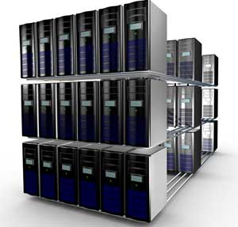

Computers can be broadly classified by their speed and computing power.
S.No. Type Specifications
1 PC (Personal Computer) It is a single user computer system having moderately powerful microprocessor
2 Workstation It is also a single user computer system, similar to personal computer however has a more powerful microprocessor.
3 Mini Computer It is a multi-user computer system, capable of supporting hundreds of users simultaneously.
4 Main Frame It is a multi-user computer system, capable of supporting hundreds of users simultaneously. Software technology is different from minicomputer.
5 Supercomputer It is an extremely fast computer, which can execute hundreds of millions of instructions per second.
PC (Personal Computer)
Personal Computer
A PC can be defined as a small, relatively inexpensive computer designed for an individual user. PCs are based on the microprocessor technology that enables manufacturers to put an entire CPU on one chip. Businesses use personal computers for word processing, accounting, desktop publishing, and for running spreadsheet and database management applications. At home, the most popular use for personal computers is playing games and surfing the Internet.
Although personal computers are designed as single-user systems, these systems are normally linked together to form a network. In terms of power, now-a-days high-end models of the Macintosh and PC offer the same computing power and graphics capability as low-end workstations by Sun Microsystems, Hewlett-Packard, and Dell.
Workstation
Work Stations
Workstation is a computer used for engineering applications (CAD/CAM), desktop publishing, software development, and other such types of applications which require a moderate amount of computing power and relatively high quality graphics capabilities.
Workstations generally come with a large, high-resolution graphics screen, large amount of RAM, inbuilt network support, and a graphical user interface. Most workstations also have mass storage device such as a disk drive, but a special type of workstation, called diskless workstation, comes without a disk drive.
Common operating systems for workstations are UNIX and Windows NT. Like PC, workstations are also single-user computers like PC but are typically linked together to form a local-area network, although they can also be used as stand-alone systems.
Minicomputer
It is a midsize multi-processing system capable of supporting up to 250 users simultaneously.
Mainframe
Mainframe is very large in size and is an expensive computer capable of supporting hundreds or even thousands of users simultaneously. Mainframe executes many programs concurrently and supports many simultaneous execution of programs.
Supercomputer

Supercomputers are one of the fastest computers currently available. Supercomputers are very expensive and are employed for specialized applications that require immense amount of mathematical calculations (number crunching).
Super Computer
For example, weather forecasting, scientific simulations, (animated) graphics, fluid dynamic calculations, nuclear energy research, electronic design, and analysis of geological data (e.g. in petrochemical prospecting).